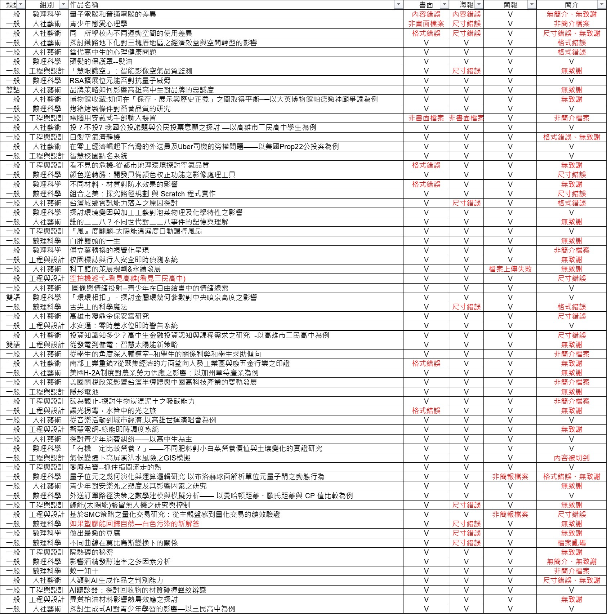
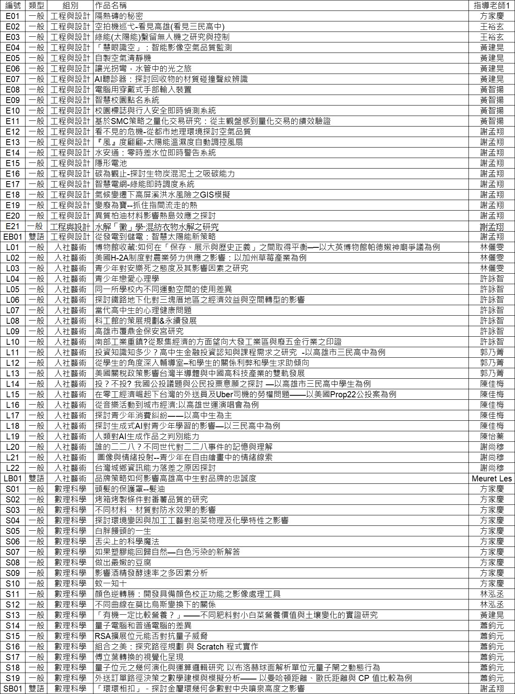

展覽初談 Prologue
循光而去的青春航紀
「啟程」，不僅是一場學術心血的落成，更是青春歲月裡一次浪漫的壯遊。在科學的嚴謹、科技的冷靜、人文的溫柔與藝術的靈動之間，我們以紙筆為舵，尋覓著屬於這個世界的解答。
每一份專題，皆是學子們於浩瀚書海中探索的獨特航線。我們從四面八方匯集於此，秉持著「膽大心細」的求真之火，在未知的知識海域中「勇往前行」。待盛會將息之際，我們將帶著行囊裡的豐碩，揮別交錯的航道各奔東西，航向更為遼闊的星辰大海。

「啟程」，不僅是一場學術心血的落成，更是青春歲月裡一次浪漫的壯遊。在科學的嚴謹、科技的冷靜、人文的溫柔與藝術的靈動之間，我們以紙筆為舵，尋覓著屬於這個世界的解答。
每一份專題，皆是學子們於浩瀚書海中探索的獨特航線。我們從四面八方匯集於此，秉持著「膽大心細」的求真之火，在未知的知識海域中「勇往前行」。待盛會將息之際，我們將帶著行囊裡的豐碩，揮別交錯的航道各奔東西，航向更為遼闊的星辰大海。
如何參與這場研究之旅
分為「一般發表」與「雙語發表」，向下細分「人社藝術」、「數理科學」、「工程與設計」三組。每隊上限 5 人，獎項獨立評比。
評比分為書面與實體兩大類。請務必將所有檔案（報告、簡報、海報、簡介）依據實施計畫辦法內容修正，並轉存為 PDF 格式上傳。決賽將邀請大學教授擔任評審，進行專業問答。
鼓勵合理使用 AI 作為輔助工具（如除錯、文法檢查），但嚴禁代筆、捏造數據或抄襲。所有參賽隊伍皆須透過 Google 表單連結 進行線上勾選與聲明確認。
透過專題入口網站下載報名文檔，並於 Google 報名表單 上傳報告書、海報、簡報與簡介。

請核對下方表格，凡標註「紅字」之組別請務必配合修正
請清查上方表格，凡標註「紅字」之組別，務必於 5/18 (週一) 23:59 前 完成檔案修正並重新上傳。
原先未能及時完成報名上傳的同學，請把握最後補件機會，同步於 週一截止前 完成上傳。
部分組別雖內容正確，但版面（Layout）有明顯瑕疵。PDF 格式雖能避免跑版，但原始排版若不佳仍會影響閱讀與評審感官。如有修正需求，請於截止前重新上傳。
「簡介」是手冊精華，並非將全部內容縮小塞入。A5 尺寸有限，字體過小將難以辨識。務必確保為單面、上方標註作品名稱與作者，且下方包含正式致謝（致謝應針對一整年專題中提供協助的所有人事物表達感激，而非僅寫「謝謝收看」）。
請務必將檔名依據官方規範編輯完成後再行上傳，確保行政作業流暢。
利用課堂進行 8 分鐘簡報初賽（不進行問答，全程錄影）。請參考以下場地地點、試用說明與報告注意事項。
依據下表審查時間，請提前 7 分鐘至教室外報到（酌情提前開始）
| 6:00 短鈴1聲 | 8:00 長鈴請立即停止並離場 | |||
|---|---|---|---|---|
| 組次 | 時間 | 人社藝術 | 數理科學 | 工程與設計 |
| 第1組 | 10:10 | LB01 | SB01 | EB01 |
| 第2組 | 10:17 | L01 | S01 | E01 |
| 第3組 | 10:24 | L02 | S02 | E02 |
| 第4組 | 10:31 | L03 | S03 | E03 |
| 第5組 | 10:38 | L04 | S04 | E04 |
| 第6組 | 10:45 | L05 | S05 | E05 |
| 第7組 | 10:52 | L06 | S06 | E06 |
| 第8組 | 10:59 | L07 | S07 | E07 |
| 第9組 | 11:06 | L08 | S08 | E08 |
| 第10組 | 11:13 | L09 | S09 | E09 |
| 第11組 | 11:20 | L10 | S10 | E10 |
| 第12組 | 11:27 | L11 | S11 | E11 |
| 第13組 | 11:34 | L12 | S12 | E12 |
| 第14組 | 11:41 | L13 | S13 | E13 |
| 第15組 | 11:48 | L14 | S14 | E14 |
| 第16組 | 11:55 | L15 | S15 | E15 |
| 第17組 | 12:02 | L16 | S16 | E16 |
| 第18組 | 12:09 | L17 | S17 | E17 |
| 第19組 | 12:16 | L18 | S18 | E18 |
| 第20組 | 12:23 | L19 | S19 | E19 |
| 第21組 | 12:30 | L20 | E20 | |
| 第22組 | 12:37 | L21 | E21 | |
| 第23組 | 12:44 | L22 | ||

點擊可放大查看完整名單
6/1 中午公告入選名單，決賽組與研討會組如需修正，請於 6/5(五) 20:00 前繳交。
第六屆專題成果展初選結果（晉級決賽、研討會分享、海報展覽名單）已全數公告，請點擊下方按鈕進入查詢系統。
進入初選結果查詢系統入選組別於大會場地與研討會場進行實地佈置與預演準備。
上午海報組決賽；下午進行研討會場分享與大會決賽，由大學教授親自評審問答。
第六屆專題成果展決賽與研討會發表時程、組別順序及評審名單已公布，請點擊下方按鈕查詢。
進入決賽日時程表系統公告第 6 屆專題《啟程》特優、優選及佳作名單，並於三民專題牆留名。
點亮你的專題航線，現場兌換驚喜好禮！
在 115 年 06/29 (一) 海報總決賽期間，大會特別推出了雙卡互動賓果活動。點擊下方按鈕前往賓果頁面，在現場參訪各專題攤位互動時，點擊網頁上 4x4 專題格子即可手動點亮；你亦可點擊周圍的禮物卡片直接控制整行或整列的點亮狀態！
完成任意橫向或縱向連線（本活動無斜向連線），即可憑網頁畫面至大會服務台兌換精美紀念品。點擊右下角的問號卡片還能翻開解鎖 Embark 羅盤徽章。點擊按鈕，開啟你的雙卡賓果挑戰吧！
幕後的策展匠人與推手
點閱進入數位卷宗，探尋計畫詳情
捕捉研究過程中的精彩瞬間


活動進行中，照片即將更新...
專題問題請洽教務處教學組 趙老師